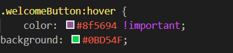
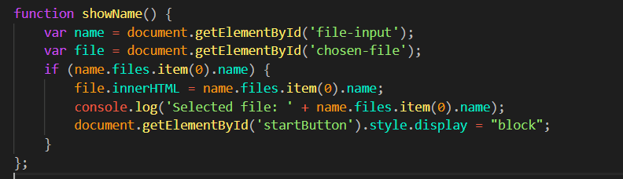
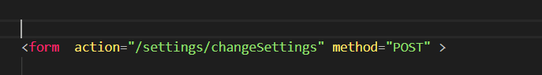
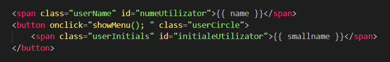
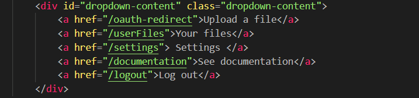

STOL (Universal Storage Tool) este o aplicatie web care pune la dispozitia utilizatorului un instrument ce permite operatiile uzuale cu (sisteme de) fisiere de mari dimensiuni.
Aplicatia noastra permite stocarea acestor fisiere prin intermediul platformelor Dropbox, One Drive si Google Drive. Astfel, prin logarea pe conturile proprii,
userii pot stoca orice fisier de mari dimensiui, pe care il pot ulterior si descarca din sectiunea "Your files". De asemenea, userul poate selecta si metoda de
distributie a fisierelor intre platforme, din sectiunea "Settings".
Este reprezentata de pagina de log in/get started,continand:
Butoanele isi schimba aspectul la hover, iar pentru click, butoanele de log in si get started primesc isi schimba culoarea,desemnand sectiunea selectata.

Aceasta reprezinta pagina pe care userul, odata logat, poate sa uploadeze fisiere. Aceasta pagina contine:
Acest buton permite rasfoirea prin fisierele locale, aparand alaturi de el numele fisierului ales
Acest buton apare atunci cand exista deja un file selectat,odata cu numele fisierului
Acest tabel va contine numele tuturor fisierelor-fragment in care este fragmentat fisierul de dimensiuni mari si locatia acestora(e.g. Google Drive)
Pe aceasta pagina, un user poate gasi toate fisierele pe care le-a uploadat pe site, dimensiunea lor, si, pentru fiecare, un buton de download
Pentru a face display la toate fisierele disponibile, am folosit functiile:
Pe pagina de setari, un user isi poate schimba numele, parola, sau modul de upload
Pagina contine un formular, care va prelua modificarile cerute si le va trimite prin butoul Save
In momentul salvarii, apare un mesaj de confirmare,in caz de reusita,sau mesaj de eroare in cazul in care setarile nu sunt salvate
Aici sunt verificate si cazurile in care parola noua si confirmarea ei nu corespund,sau parola actuala nu e corecta.
Pe pagina de admin se poate intra numai de pe un cont special de admin, unde sunt afisati toti userii aplicatiei.
Adminul poate selecta cati useri doreste din lista, pentru a exporta date despre aceastia in format csv
Acest buton permite downloadarea datelor in format csv
Odata ce userul este logat, headerul va contine in partea dreapta numele sau si un buton rotund cu initialele.
Prin apasarea butonului, se va deschide un meniu, care va permite navigarea intre paginile site-ului, sau delogarea
Pentu admin, in acelasi va fi titlul de "Administrator page" impreuna cu un icon ce indica rolul de administrator, folosit tot in format svg